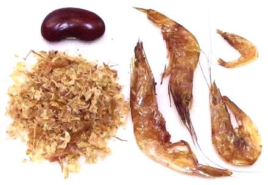

African Dried / Smoked Crayfish

[Nematopalaemon hastatus (Estuarine Prawn) |
Exhippolysmata hastatoides (Companion Shrimp) |
Macrobrachium vollenhoveni (African River Prawn)]
Confusion! West African "Crayfish" are
freshwater Shrimp (or Prawns, depending on your preferred terminology)
and are not closely related to North American Crayfish, which are
fresh water lobsters. The catch is predominantly of the three species
listed above. West African Crayfish are usually smoked, which is why
you will find recipes listing both "Dried Crayfish" and "Dried Shrimp".
The shrimp are sun dried and not smoked.
More on Shellfish Products
The packages from which the photo specimens came, when opened,
smelled remarkably like Japanese shaved bonito (Katsuobushi), and the
flavor of the shrimp proved also quite similar, but stronger.
Buying:
Ground African Crayfish is not much available
in markets in North America, but can be purchased on-line. The photo
specimen of ground crayfish was from JEB Foods for 2018 US $22.89 /
pound, and the whole specimens were from Happy African Tropical at
2018 US $3.98 / 2 ounces ($31.84 / pound). Dried Crayfish are exported
from Nigeria and Ivory Coast.
Measures:
African recipes almost never tell you if the
measure is for whole crayish or ground, but most African recipes seem to
measure the Crayfish whole. A cup of whole Nigerian Crayfish weighs
31 grams (1.1 ounces) and a cup of Nigerian Ground Crayfish weighs 55
grams (1.9 ounces) so your measure of ground should be just above half the
measure for whole. Basically, use your own best judgement, because you
may not wish to use as much as they do in Arica.
Storing:
Dried Crayfish should be stored very dry in
a tightly sealed container in a dark place. They should last about a
year.
Subst:
The usual recommendation is for Smoked Fish.
as I remarked above, these products smell and taste a lot like Japanese
shaved bonito (Katsuobushi), just a bit stronger. African smoke dried
fish would be a lot stronger. I'm sure Maldive Fish would work well too,
but that's rarely available in North American households.
sf_crayafz 180316 - www.clovegarden.com
©Andrew Grygus - agryg@clovegarden.com - Photos
on this page not otherwise credited © cg1
- Linking to and non-commercial use of this page permitted